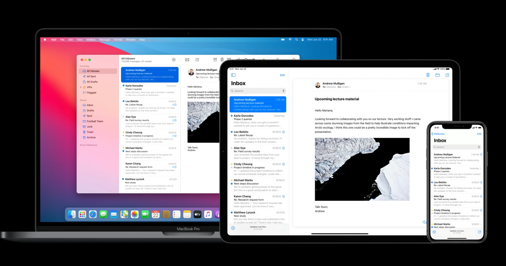
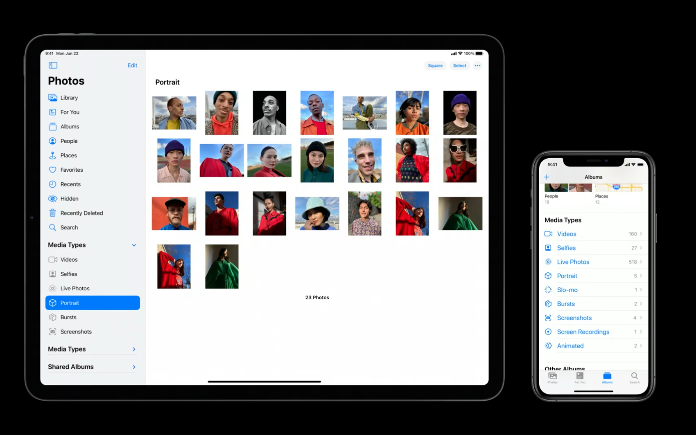
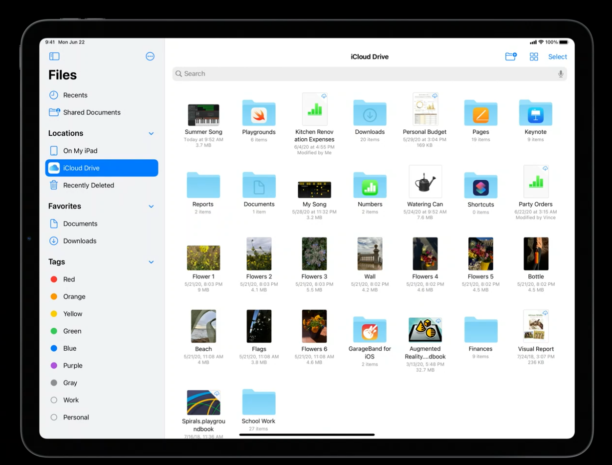
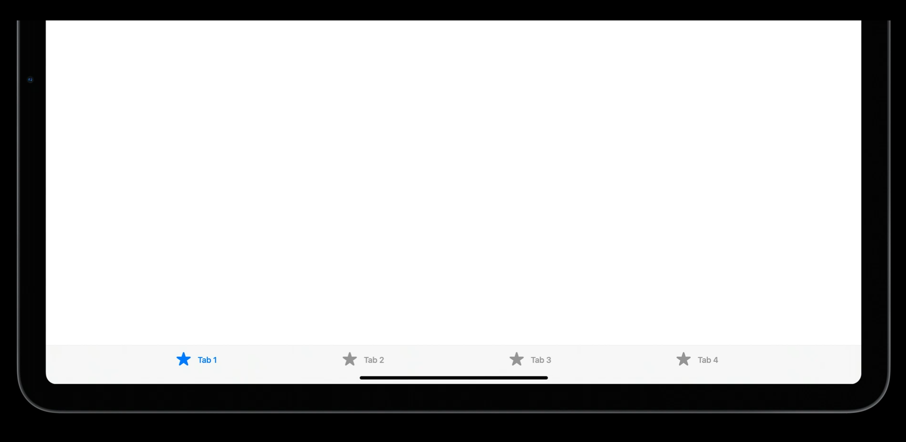
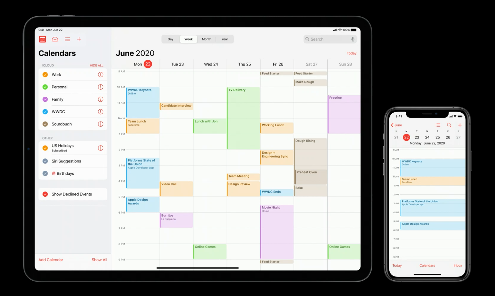

利用自动布局、Mac Catalyst、全终端统一购买等技术，许多 app 可以扩展到更多设备和平台。人们可以有更多机会在所有他们喜欢的设备中选择一个最适合的去使用他们喜欢的 app。对于设计师和开发者来说，这意味着我们需要聚焦于每个平台最适合什么，进一步在每个设备和每个平台上创造更好的体验。

一方面，在 Mac 上，你可以利用 Mac 巨大的屏幕，它有着最精确的输入方法，macOS app 支持所有的那些高级的使用实例和功能，让每一个人都可以用上它。
另一方面，在 iPhone 上，iPhone app 可以让你通过多点触控快速、简单地随时随地地访问那些最重要的功能。对于这两者来说，你的 app 的设计方向应该都十分明确。
但对于 iPad 来说呢？因为 iPad 处于两者之间，但并不意味着它的使用场景只处于两者之间。一个好的 iPad app 的目标应该有它的独特之处，这也是这篇文章想要讲的。
在这篇文章中会首先讲下在 iPadOS 14 中的 app 中应用的一些设计准则，接着会讲一讲怎么把这些设计准则应用到你的 app 中。
Layout 布局
作为 iPad 最突出的一点就是它有一块大屏幕。在你设计一个 iPad app 时，你的第一步就应该是利用好这块大屏幕来展示你的内容和用户界面。
下面通过 iPadOS 14 原生 app 的几个实例来具体看下你该如何实现这一点。
扁平化 app 导航
避免为了更新屏幕上的一部分内容而出现大的全屏幕的过渡。下图是 iOS 13 中的「照片」app，你可以选择一个相册或者一个媒体类型（如人像），接着它就会滑动过渡到你选择的具体内容并以全屏展示。这是简单的、熟悉的，而且这个逻辑在 iPhone 上运转良好。
在 iPad 上也有着相似的导航结构，但是在屏幕右侧有大块的屏幕空间没有被利用起来。
所有在 iPadOS 14 中，「照片」app 增加了边栏来作为导航，不再有大块的没有被利用的空白空间，右侧的照片内容可以充满整个屏幕，左侧的边栏也能发挥它的功能。

这种显示结构也带来了另外一个好处。如果你想在 app 中的不同部分切换，去往不同的相册，查看不同的照片，现在只需要点击一下就可以了。
同时这个结构也会让拖放操作更加容易，因为你要放置的目标，也即你想放置照片的相册，在屏幕上总是可见的。
展示更多的内容
这是一个很简单的道理，你在 iPad 上获得了一块更大的屏幕，所以为了填满它你需要更多的内容。回到 iOS 12，下图是 iPad 主屏幕的样子，你可以看到所有的图标之间的距离是很远的，它们在空间上是稀疏的。
在 iPadOS 13 中，多增加了一行一列的图标。而现在在 iPadOS 14 中，进一步增加了新的小组件。现在图标还是很大，但是你可以一次性看到更多，它更好地利用了整个屏幕空间。
再来看另外一个例子。下图是 iPadOS 13 中的「文件」app。文件充满了整个屏幕，看上去已经没有空白空间可以增加更多了。但是它一次性只展示了 12 个图标，它可以变得更好。
在 iPadOS 14 中，「文件」app 中的图标变得更小了，但仍然足够大到看得清、容易点击，所以整个 app 仍然是可用的。这是一个通过对可用屏幕空间更好地利用，从而轻微地改变内容密度来让整个 app 变得更加有效率、更加强大的一个好的示例。现在「文件」app 可以展示原来的三倍数量的图标。

只要保证你的文本是清晰可读的，你就应该看看有没有更好的办法在你的 app 中展示更多的内容。
添加更多上下文关系
在 iPhone app 中，你总是聚焦于一个特定的事情，因为在这样一个小屏幕上只有那么一点空间去展示内容。但是在 iPad 上，你可以获得更多的空间用来一次性展示更多的内容。
下图是在 iPadOS 13 中当你在「文件」app 中重命名一个文件时的样子，除了能看到重命名的文件你看不到其他东西，但这也意味着你丢失了有关于其他文件的上下文关系。
在 iPadOS 14 中，为了保持上下文关系，即使你在重命名一个文件时，屏幕上的其他内容也是可用的。你可以使用文件夹的其他文件的名称来作为重命名文件的参考。
所以像「文件」app 一样，检查你的 app 中有遮罩或者遮挡了屏幕上其他部分内容的地方，看看能否保持上下文关系可见，这会让你的 app 更加轻量化、更加强大。
另一个例子是弹出框（popover），当你要展示一个东西来自于哪里的上下文关系时，弹出框很有用。例如，当你在日历中查看或者编辑某个特定的日程时，弹出框的箭头可以帮助你知道那个日程来自于哪一天。
进一步来看下 iPadOS 13 中的日历弹出框，这个弹出框的箭头只是指向了一个叫「日历」的按钮，它没有给出任何的有用的上下文关系。
所以在 iPadOS 14 中，日历菜单被移动到和日历日程同一层级，现在你可以在查看日历日程或者与日历日程发生交互的同时，改变不同日历的可见性，结果会马上显示在屏幕右侧。
仔细审查你的 app，看看是否有任何的弹出框或者模态菜单，看看它们是否给人们有用的上下文关系，是否挡住你的 app 的其他内容，尝试着让那些控件在同一层级而不是相互遮盖会不会变得更好。如果你的 app 需要同时在 macOS 上运行，更要避免使用模态窗口，因为 Mac 拥有更大的屏幕和最大的窗口，所以在 macOS 上模态 UI 比在 iPadOS 上使用得更少了。
另一方面，在像 iPhone 上这样的紧凑型设备上，你可能没有足够的空间一次性展示多个东西，你不应该勉强这样做，你不应该把多个部分的 UI 压缩到一个屏幕上。当你没有足够空间在同一个层级上展示每一件东西时，模态仍然是一个聚焦在一个特定部分内容的好的选择。
沉浸于内容任务中
有时候，iPad 最神奇的体验来自于屏幕不只是一块玻璃时，整个设备会变成内容的一部分，比如在「图片」app 中翻动书页或者在「Apple TV」app 中观看视频，亦或是在「备忘录」app 中使用 Apple Pencil 涂涂画画。
在「照片」app 中，当你深入编辑一张照片时，它使用了一种为 iPad 特别设计的自定义的沉浸式布局。你可以看到所有的控件在屏幕的左侧或右侧对齐，这样当你手持 iPad 时可以方便地用两手使用它们。在大屏幕上，你会看到照片的呈现是赏心悦目的，编辑控件不会盖住你的照片。
来看另一个例子，在 iPadOS 14 的「音乐」app 中，正在播放界面占据了整个屏幕，这样你可以完全聚焦于正在播放的音乐和歌词。与 Mac 相比较，这种聚焦于一个特定部分内容的能力对于 iPad 来说是独一无二的、特别的。软件可以让硬件本身几乎消失，就像变成内容的一部分。
Inputs 输入
iPad 是一个触控优先的设备，但是从一开始，iPad 就支持多种输入方式。最开始支持键盘，到现在支持 Apple Pencil 和触控板。最好的 iPad app 是支持所有的这些输入方式，让每种输入方式做自己最擅长的事情。
当然，你应该从多点触控开始。在 iPadOS 中的每一个东西都被设计成易于点击或者可以通过快速流畅的手势进行操作。你的 iPad app 应该总是支持这些触控交互方式。即使你打算支持其他的输入方式，但你仍需要确保你的 app 在触控体验上是极好的。
在支持多点触控之后的下一步就是利用 iPadOS 的内建功能支持其他的输入方式。对于使用妙控键盘或者其他键盘的用户来说，你应该在 app 中确保所有的指令都被添加了键盘快捷方式。很多人喜欢使用键盘快捷方式，如果你的 app 有这些快捷方式，用户会很喜欢，但这些快捷方式不会阻碍其他用户的使用。
如果你把你的 app 通过 Mac Catalyst 带到 Mac 上去，所有的这些键盘快捷方式都可以被转换到 Mac 上，这对于用户使用很方便。
除了键盘，现在 iPad 还支持了触控板。大多数的触控板支持都是自动的，因为在 iPadOS 中所有的内建控件都已经支持触控板操作。
你也可以把指针系统延伸到任何你添加的自定义控件上或者自定义交互上。有关于 iPadOS 的指针系统，可参考《 iPadOS 指针系统的设计规范 iPadOS Pointing System Design Guideline》。
你也应该支持 Apple Pencil 的随手写（Scribble）功能，像指针支持一样，当你使用系统的文本输入控件时，你将会自动获得随手写功能的支持。但是如果你有自定义的控件，你应该确保支持随手写功能，因为人们期望在整个设备上的所有 app 中都能使用随手写功能。
这就是使用 iPadOS 上各种输入方式的所有内建功能。有一点值得特别提及的是，各种输入方式可以同时工作，你可以在 iPad 上把多种输入方式组合在一起成为一个交互，这可能会创造很多之前没有存在过的交互方式。
例如将键盘和触控组合在一起。在 Safari 中，你可以通过在键盘上按着 command 键时在屏幕上点击链接，从而在新标签中打开网页；按着 Option 键时在屏幕上点击链接，从而下载一个文件；按着 Ctrl 键时点击链接，从而获取更多操作选项。
在你的 app 中，你也应该支持将多种输入方式组合在一起使用。你可以支持哪些标准的系统行为，例如按住 Option 键时拖动元素实现复制或者按住 Shift 键时点击元素实现选择一组元素。
将 Apple Pencil 和触控组合在一起也是一种方案。在「Loom」app 中，它将 Apple Pencil 和触控组合在一起以更快地画出框架。在左边，你可以通过触控使用转盘来选择哪一个框架是你需要绘制的；在右边，可以使用 Apple Pencil 绘制实际的动画框架，这样就可以大幅提高工作效率。
这就是可以让你的输入更加强大的一些方法。
还有最后一点，为了让你的 app 变得更加快速，一个核心方法就是让你的 app 始终保持响应。无论屏幕上发生了什么，动画、过渡或者是任何进程，它应该对于各种输入总是可响应的。
这里有一个例子，iPadOS 14 的下拉菜单在展开过程中，你就可以通过一个点击选择某个操作。如果需要等到菜单完全展开才能操作，那就会感到 app 运行很缓慢，像是 app 跟不上你的思考速度一样。
另一个例子是在之前当你展开一个下拉菜单时，点击菜单外面的区域你只可以关闭它，你不能把手势传递到菜单下面的内容。而在 iPadOS 14 中，在展开下拉菜单时，你可以在做出滚动底部内容的手势时，同时关闭菜单并开始滚动内容，app 一直处于时刻保持可响应的状态。
这些微小的交互很微不足道，但是当你真正用到的时候，会发现它们很加分。人们会发现无论在什么情境下，iPad 都会时刻响应用户的各种输入方式，这会增强用户的信心。人们有时候会抱怨动画过渡太慢，时间过长，需要等它们完成才能继续操作。如果你的 app 是时刻保持响应的，用户可以随时与 app 发生交互，那这些动画就可以帮助人们获取情境关系而不是阻挡用户操作。
Sidebars 边栏
系统 app 中边栏的应用
为了优化 iPad 的布局，在 iPadOS 14 中的一个核心功能就是边栏（sidebar）。来看几个系统 app 的示例。
下图是 iPadOS 13 中的「家庭」app，你可以看到在标签栏（tab bar）中有许多空余的水平空间，这没能充分利用好 iPad 这块屏幕。导航到一个特定的房间需要更多的步骤。你需要点击「房间」标签，然后打开房间的弹出框，找到你要找的房间，点击并切换过去。这在当你在黑暗中想打开一盏灯时显得格外繁琐。
现在在 iPadOS 14 中，使用边栏替代了标签栏，这样更好地利用了大屏幕，你通过简单的单次点击就可以进入任何你想查看的房间，你还可以通过简单地拖放重新排列房间。
在「音乐」app 中也添加了边栏，它为前往整个音乐资料库的各个部分提供了更快速的导航。
在「文件」app 中的边栏让导航和自定义变得比以前更加简单。新的边栏支持编辑模式，让展示、隐藏、重新排序内容变得更加简单。你也可以简单地通过拖放动作将重要的内容在边栏创建一个快捷方式，人们可以按照自己的需要调整边栏上的内容。边栏甚至支持收起展开文件夹，你通过一个手指就能重新排列内容。
「照片」app 中也增加了边栏，让导航变得更加简单和快速。内容放置在一个可折叠的群组中，你可以把媒体类型群组折叠以快速访问下面的相册。
如果你点击边栏顶部的开关按钮，边栏就可以收起来，让你的照片充满整个屏幕。
要想再让边栏出现，可以从屏幕左侧轻扫，这样就可以让边栏以遮罩的形式出现，你可以随时在需要的时候召唤出边栏，在需要与内容发生交互时，边栏又会自动隐藏，你可以专注于照片本身。
当然，你也可以通过点击边栏开关按钮让边栏重新出现，而不自动隐藏。
当在竖屏使用情景时，边栏会自动切换为遮罩模式，这是为了确保你的内容在水平方向有足够的展示空间，同样地，你可以通过点击边栏开关按钮或者从屏幕左侧轻扫重新唤出边栏。
在 iPad 的多任务模式下也是类似的模式。例如在分屏视图中没有足够的空间显示边栏和你的内容，边栏就会切换成遮罩模式。
来看一下「邮件」app，iPad 上的「邮件」app 的一个特别之处就是它支持三列布局，这对于将邮箱和邮件的层级视觉化非常有帮助。在 iPadOS 13 中，三列的布局只在最大的 iPad Pro 上是可用的，更小的 iPad 被限制为只能展示两列布局。 在 iPadOS 14 中发生了变化，所有的 iPad 都可以显示三列的布局，在屏幕左侧轻扫就可以让第三列显示出来，你可以同时查看邮箱、邮件列表和邮件内容。一旦你处理完边栏上的任务，布局会自动收回两列的布局以为内容腾出空间。
当边栏以遮罩样式出现时，三栏的布局也可以正常显示。从屏幕左侧轻扫显示边栏，如果你需要第三列的内容，继续向右轻扫，这样两个并排的边栏就会以遮罩样式显示在内容上面。现在所有运行 iPadOS 14 的 iPad 都可以使用这种样式。
在 iPadOS 上创建的边栏会在 macOS 上被转换为 mac 样式的边栏，所以对于 Catalyst app 来说，边栏也是创建导航结构的好方法。
总结一下 iPadOS 14 的新的边栏功能：
- 它优化了 iPad 的布局；
- 它支持模态编辑和非模态编辑，用户可以快速导航到对于他们最重要的地方；
- 它支持多窗口或者多 app 之间的拖放操作；
- 它的内容可以以可折叠的群组形式呈现；
- 它可以以遮罩形式展示，这样就不会与其他内容抢占空间；
- 可以通过流畅的轻扫手势让其出现和隐藏，快速简单；
- 把三列布局的优势带到了所有的 iPad 上。
Split View 分栏视图设计规范
iPadOS 14 的边栏是由之前的 Split View 分栏视图演化而来，先来看下分栏视图的设计规范。
Split View 分栏视图管理着你的 app 中的首要层级的内容层级展示。分栏视图包括了一个两列或三列的界面，展示了一个主要列（primary column）、一个可选的补充列（supplementary column）和一个二级的内容面板（content pane）。在主要列中的变化会驱动可选列中的内容变化，进而影响展示的内容。分栏视图对于在多个内容层级之间进行导航非常有用，像是在邮件中为了浏览每封邮件需要在邮箱和邮件中来回穿行。
分栏视图可以展示不同的内容，但是许多系统 app 使用一个分栏视图创建了一个基于边栏的界面。在这种类型的界面中，主要列展示了一个边栏，可选的补充列展示了一个列表视图，二级内容面板展示选择内容的详细细节。
- 在 iPad 上，使用分栏视图而不是标签栏（tab bar）：分栏视图提供了和标签栏相同的快速导航功能，但可以更好地利用好更大的显示屏。
- 为每个列的类型选择合适的样式：主要列展示边栏时，则使用边栏的外观样式。这个外观对于 app 的层级导航和展示一系列内容列表都是合适的，比如邮件 app 中的邮箱。补充列展示列表视图时，使用普通（plain）的边栏外观样式。这个外观对于展示独立的内容列表是合适的，像是邮箱中的邮件。具体开发指导可参见「UICollectionLayoutListConfiguration.Appearance」。
- 在主要列和补充列中，始终高亮活跃的选中部分：虽然二级内容面板会变化，但它应该总是与其他列中的清晰可识别的选中内容相关联。这个选中内容可以帮助人们理解列与列之间的关系，确定前后文关系。
- 如果合适的话，允许人们在列与列之间拖放内容：因为分栏视图提供了对多个内容层级的访问，人们可以通过在列与列之间拖拽和释放条目，快速地将其从 app 中的一部分内容移动到另一部分
具体开发指导可参见「 UISplitViewController 」。
Sidebar 边栏设计规范
Sidebar 边栏为 app 提供了层级导航，可以让用户快速访问你的 app 中的首要层级的一系列内容。在边栏中选择一个条目可以让人们导航到一个特定部分的内容中去。例如，在邮件 app 中的边栏展示了一个所有邮箱的列表，人们可以选择一个邮箱访问邮件列表，选择一封特定的邮件在内容面板展示内容。
你通过使用一个边栏样式的列表创建一个边栏，并把它放在一个 Split View 分栏视图中的主要列。
- 在一个边栏上应用正确的外观：为了创建一个边栏，使用一个 collection view 列表中的边栏外观布局，具体开发指导可参见「UICollectionLayoutListConfiguration.Appearance」
- 使用一个边栏组织 app 的层级信息：边栏是一个扁平化信息层级和同时提供对几个相同层级的信息分类的访问的好方法。使用一个边栏快速导航到 app 的核心部分或者首要层级的内容（如文件夹和播放列表）。
- 任何可能的时候，让人们自定义一个边栏的内容：因为一个边栏为你的 app 提供了导航，你可以使用它为人们提供了快速访问他们关心的内容的快捷方式。让用户来决定哪些条目是最重要的才是最好的。
- 不要阻止人们隐藏边栏：允许人们隐藏边栏以为内容创建更多的空间，可以通过内建的边缘滑动手势再次显示边栏。避免默认情况下隐藏边栏。
- 保持边栏中的标题清晰准确：删除不必要的和冗余的词语。例如，在邮件 app 中就没有在每个邮箱的标题中出现「邮件」字样，而是使用了更准确的术语，比如「有旗标」、「草稿」。
- 通常情况下，避免在一个边栏中展示超过两个层级之外的内容：当数据层级超过两级时，应该在分栏视图的补充列中使用一个列表视图。
具体开发指导可参见「UICollectionLayoutListConfiguration」。
在你的 app 中添加边栏
有两种样式的 app 导航非常适合边栏：扁平型和层级型。
扁平型导航使用了一个扁平的结构，第一层级的不同部分的内容具有差不多的比重，你通常会使用标签栏在不同部分间导航，像是「照片」、「音乐」这种 app。
层级型导航在需要对内容进行组织和在不同层级之间的内容来回横穿的 app 中更加普遍，像是「邮件」、「备忘录」这种 app。
除非你的 app 是沉浸型 app 比如游戏，否则一般都可以归类为这两种导航样式，这两种都可以添加新的边栏。我们可以从已经有 tab bar 的app 说起。Tab bar 是让导航变得简单的最有用的工具之一，当你看到 tab bar 时，你能马上知道自己在哪，可以去往哪里。使用 iPad 和 iPhone 的用户也很熟悉 tab bar，所以对于用户来说也没有什么学习成本，它可以清晰地传达出 app 最重要的几个部分。所以无论你的 app 多么复杂，tab 都可以让你的 app 结构容易理解。

所以在考虑引入一个边栏时，可以考虑把原有的几个 tab 放在边栏的最顶端。
边栏可以作为 tab bar 的等价物，但不要完全在 iPad 上放弃 tab bar。边栏仅适用于 regular 宽度的布局，在 compact 宽度的布局下应该仍然使用 tab bar。
确保在边栏和 tab bar 中有相同的第一层级的条目，这会让你的 app 不管在什么尺寸等级下都可以保持熟悉。
接下来再来考虑还要在边栏中添加什么。考虑下你的 app 的所有内容，我们发现最适合放在边栏上的内容是那些比较长的内容列表，特别是那些用户自己生成的，像是「照片」中的相册或者「音乐」的播放列表，把这些放在你的主要导航部分的下面。
在向边栏添加这些内容时，把它们组织在一个可折叠的群组下面，这可以在第一层级的内容和下面的内容之间保持正确的层级关系。即使是通过两种方式到达相同的内容也没有关系，比如通过一个顶级导航和通过一个下面的文件夹到达同一部分。
你可以选择继续添加额外的其他内容，但是不要在边栏上铺开整个 app。如果边栏变得超载，需要很多滚动和多次展开才能找到东西，那就失去了本身作为快速跳转的目的。
如果你的边栏的内容是用户可配置的，添加一个「添加」按钮，把它放到每一个可配置部分的底部。这可以让人们在他们使用内容的相同地方创建自定义的内容。
如果你的 app 的导航更类似于层级型导航，把顶级层级的内容摊开放在边栏的顶端，就像是「邮件」app 那样会有多个邮箱显示在边栏中。在下面可以添加你的 app 中最重要的部分的快捷方式。
记住边栏不适合浏览很深的、网状的层级结构，内容的整个层级不应该被全部放在边栏上。
总结一下如何在你的 app 中加入边栏：
- 不要在 compact 宽度的尺寸等级下使用边栏，在这种情况下，边栏应该被转换为 tab bar 或者标准表单样式；
- 不要在同一个界面混用边栏和 tab abr，边栏和 tab bar 是同一种内容的两种不同展现形式，混用会创造一种令人困惑的导航结构；
- 不要把整个 app 都摊开在边栏上；
- 在边栏的顶端放上最重要的导航部分；
- 在 compact 宽度时，把边栏转换成 tab bar；
- 建议在边栏上使用轮廓型图形，在 tab bar 上使用填充型图形；
- 考虑在边栏上添加额外的内容，确保那些内容对于用户来说是重要的，并把它们放置在一级导航模块下面，列表样式的内容和用户生成的内容都是好的选择；
- 把同一层级的内容放在一个可折叠的群组中；
- 支持编辑模式，用户可以根据需要自定义边栏；
- 确保支持拖放功能，用户会希望把东西拖放到边栏上的文件夹，也希望把内容拖放到边栏上以创建快捷方式。
Toolbar 工具栏
在 iPadOS 14 中，另一个更好地为了利用 iPad 空间的改进是工具栏。在 iPadOS 13 中的工具栏占据了更多的空间，像前面提到的 tab bar 一样，工具栏也没有充分利用好空间。
所以在 iPadOS 14 中，一些工具栏控件被移动到了顶部，一般最多有三个。
当没有足够的空间，比如 compact 宽度时，这些工具栏控件仍然会保持在底部。

总结
- 根据 iPad 的特性，有针对性地设计 iPad app；
- 扁平化 app 的层级结构，让内容充满整个屏幕，以展示更多的内容，给用户更多的上下文关系；
- 支持 iPad 的所有输入方式：触控板、键盘、Apple Pencil 和多点触控，让它们协同配合，创造绝佳的交互；
- 使用边栏实现更快速地导航，在边栏中包含 app 中重要级别的层级；
- 把重要操作和控件从底部的工具栏上移动到顶部的导航栏上以利用好 iPad 的大屏幕。
参考链接
- Design for iPad - WWDC 2020 - Videos - Apple Developer
- Split Views - Views - iOS - Human Interface Guidelines - Apple Developer
- Sidebars - Bars - iOS - Human Interface Guidelines - Apple Developer
如果你觉得这篇文章对你有所帮助，欢迎请我喝杯咖啡，感谢你的支持😁